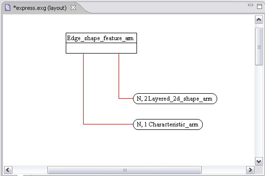
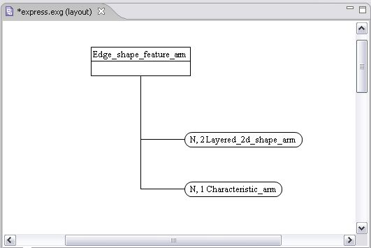
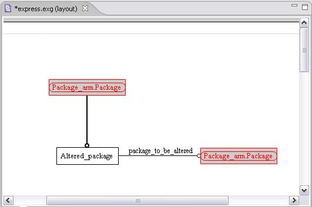
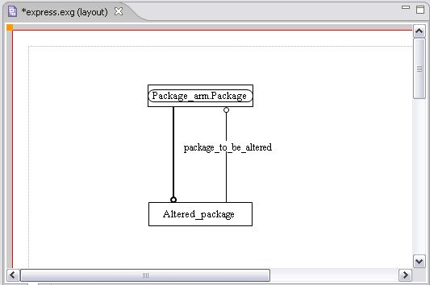
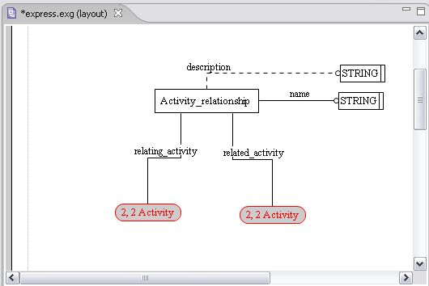
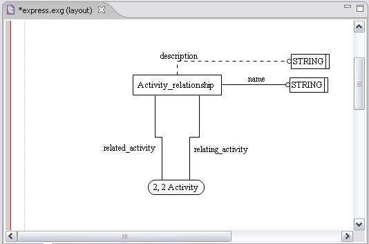
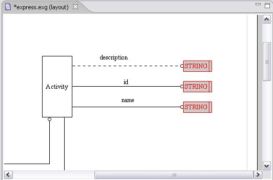
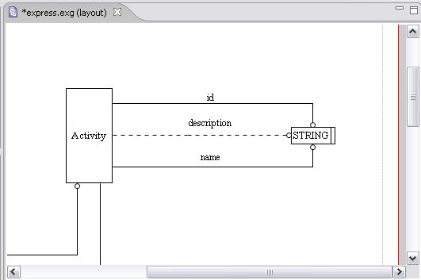

Grouping/Ungrouping
Trees (relationships)
Interfaced objects
Page references
Simple types
There is a possibility to group or ungroup similar objects:
Select similar objects on the diagram.
Right click on the selection area. The
context sensitive menu
appears.
Select the
Grouping --> Bundle
menu item. The single object symbol appears. To ungroup objects select the
Unbundle
menu item.
Note:
In case you do not know if there are any similar objects on the diagram, just select all objects on the diagram and perform grouping.
Grouping of Trees
An example of grouping of trees (relationships):
Relationships before grouping (see
Figure 1
).
and after (see
Figure 2
).

Figure 1.
Relationships to be grouped

Figure 2.
Grouped relationships
To top
Grouping of Interfaced objects
An example of grouping of Interfaced objects:
Interfaced objects before grouping (
Figure 3
)
and after (see
Figure 4
).

Figure 3.
Interfaced objects to be grouped

Figure 4.
Grouped interfaced objects
To top
Grouping of Page references
An example of grouping of page reference objects:
Page reference objects before grouping (
Figure 5
)
and after (see
Figure 6
).

Figure 5.
Page reference objects to be grouped

Figure 6.
Grouped page reference objects
To top
Grouping of Simple types
An example of grouping of simple type objects:
Simple type objects before grouping (
Figure 7
)
and after (see
Figure 8
).

Figure 7.
Simple type objects to be grouped

Figure 8.
Grouped simple type objects
To top
Copyright © 2005-2008
LKSoftWare GmbH
. All Rights Reserved.
JSDAI is a registered trade mark of LKSoftWare GmbH.